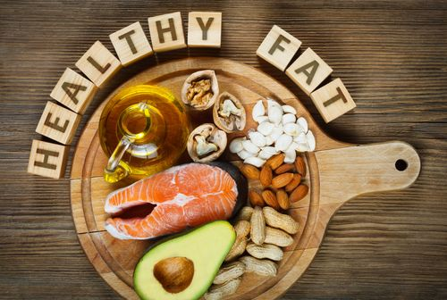

Nutrition
In nutrition, diet is the sum of food consumed by a person or other organism. The word diet often implies the use of
specific intake of nutrition for health or weight-management reasons. Complete nutrition requires ingestion and absorption of vitamins, minerals, essential amino acids from protein and
essential fatty acids from fat-containing food, also food energy in the form of carbohydrate, protein, and fat. Dietary
habits and choices play a significant role in the quality of life, health and longevity.

Carbohydrates
Carbohydrates are the primary source of energy for the body and therefore play the most substantial role in fueling exercise. There are two different types of carbohydrates – complex and simple. The names give an indication of the time taken to digest; complex carbs take a longer time period to digest than simple carbs.
Complex carbohydrates provide the body with prolonged slow-release of energy and have a great nutritional benefit. While simple carbohydrates provide the body with a short-term, fast releasing energy, they contain little nutritional value.For this reason, you should look to primarily consume complex carbohydrates. Some foods to consider adding to your diet include whole-grains, oats, beans, nuts, fruits, and vegetables.

Protein
The majority of gym-goers will be well aware that consuming protein is important. The reason why protein is so important is that, it plays a key role in recovery and repair. During exercise, the body is exposed to strains and stresses which cause damage to occur to the muscles at a microscopic level. In order for the damage to be repaired, protein is needed. Without it, recovery periods will be extended and chronic fatigue may become a factor.
Protein is found most highly in animal produce such as lean meats, eggs & dairy. It can also be found in smaller quantities in foods such as seeds, nuts, legumes, beans, and soy.

Fats
Fats are often incorrectly seen as the primary reason for fat gain. However, fats are not responsible for this and actually play a key role in the absorption and transport of nutrients. In addition, they can have a positive impact on heart health and hormone production.
While fats can have a positive impact on health, there are several types of fat – some of which are of greater benefit than others. While saturated fats are not as harmful as once believed, focus primarily on unsaturated fats. Unsaturated fat foods include avocados, seeds, nuts, peanut butter, fish (salmon, tuna, mackerel), oils (olive, peanut, sesame), and soy products (tofu, soy milk)

While you should include a variety of foods in your diet, there are some you should limit.
Foods to limit include:
- Alcohol: Alcohol can negatively affect your ability to build muscle and lose fat, especially if you consume it in excess.
- Added sugars: These offer plenty of calories but few nutrients. Foods high in added sugars include candy, cookies, doughnuts, ice
cream, cake and sugar-sweetened beverages, such as soda and sports drinks.
- Deep-fried foods: These may promote inflammation and — when consumed in excess — disease. Examples include fried fish, french fries, onion
rings, chicken strips and cheese curds.
In addition to limiting these, you may also want to avoid certain foods before going to the gym that can slow digestion and cause stomach upset during your workout.
These include:
- High-fat foods: High-fat meats, buttery foods and heavy sauces or creams.
- High-fiber foods: Beans and cruciferous vegetables like broccoli or cauliflower.
- Carbonated beverages: Sparkling water or diet soda.
Many bodybuilders take some dietary supplements.
The bodybuilding supplements include:
- Whey protein: Consuming whey protein powder is an easy and convenient way to increase your protein intake.
- Creatine: Creatine provides your muscles with the energy needed to perform an additional rep or two. While there are many brands
of creatine, look for creatine monohydrate as it’s the most effective.
- Caffeine: Caffeine decreases fatigue and allows you to work harder. It’s found in pre-workout supplements, coffee or tea.
A multi-vitamin and mineral supplement may be helpful if you’re limiting your calorie intake in an effort to reduce body fat during your cutting phase.
While calories and macronutrients are important, the ideal gym diet will be one that positively influences health. This is a diet that is rich in vitamins and minerals where all three macronutrients are consumed and nutrient-sparse foods are restricted.

Diet Plan 1
Day 1
- Breakfast: Oats Banana Pancakes with Protein Shake
- Lunch: Multigrain roti with palak chicken Avocado bell pepper salad
- Pre-Workout Snack: Bananas
- Dinner: Brown rice, peas paneer curry, sprouts vegetable salad
Day 2
- Breakfast: Oatmeal with Greek Yogurt & Seasonal fruits
Mango Juice
- Lunch: Multigrain roti, fish curry, vegetable salad
- Pre-Workout Snack: Toast with Jam
- Dinner: Broken wheat khichidi, carrot raita, egg white, and vegetable salad
Day 3
- Breakfast: Poached Eggs Whole Grain Toast Protein Shake
- Lunch: Quinoa upma, chicken and broccoli salad
- Pre-Workout Snack: Mixed Nuts & Dried Fruits
- Dinner: Lean Beef and vegetable curry, brown rice, cucumber raita, Baby Potatoes Chocolate Milk
Day 4
- Breakfast: Oatmeal with Honey Apple Juice
- Lunch: Grilled Chicken Salad Whole Grain Bread
- Pre-Workout Snack: Toast with Peanut Butter
- Dinner: Methi Chicken, Brown Rice, Broccoli Protein Shake
Day 5
- Breakfast: Scrambled Egg, Whole Grain Toast, Smoothie
- Lunch: Grilled chicken vegetable roti rolls, Green Salad
- Pre-Workout Snack: Mixed Nuts & Dried Fruits
- Dinner: Chicken Stir Fry, Spring Onion, Peppers & Broccoli, Chocolate Milk
Day 6
- Breakfast: Oatmeal, Whole Grain Toast, Orange Juice
- Lunch: Whole Grain Chicken Wrap, Black Beans, Peppers & Greek Yogurt
- Pre-Workout Snack: Apple with peanut butter
- Dinner: Keema bhurji and multigrain rotiLean Beef Mince, Sweet Potato, Protein Shake
Day 7
- Breakfast: Oatmeal with Nuts, Smoothie
- Lunch: Whole wheat pasta with chicken and
Green Salad
- Pre-Workout Snack: Granola or Cereal
- Dinner: Fish curry, boiled green peas salad,
Brown Rice, Garden Peas, Milk
Diet Plan 2
Day 1
- Breakfast: Scrambled eggs with mushrooms and oatmeal
- Snack: Low-fat cottage cheese with blueberries
- Lunch: Venison burger, white rice and broccoli
- Snack: Protein shake and a banana
- Dinner: Salmon, quinoa and asparagus
Day 2
- Breakfast: Protein pancakes with light-syrup, peanut butter and raspberries
- Snack: Hard-boiled eggs and an apple
- Lunch: Sirloin steak, sweet potato and spinach salad with vinaigrette
- Snack: Protein shake and walnuts
- Dinner: Ground turkey and marinara sauce over pasta
Day 3
- Breakfast: Chicken sausage with egg and roasted potatoes
- Snack: Greek yogurt and almonds
- Lunch: Turkey breast, basmati rice and mushrooms
- Snack: Protein shake and grapes
- Dinner: Mackerel, brown rice and salad leaves with vinaigrette
Day 4
- Breakfast: Ground turkey, egg, cheese and salsa in a whole-grain tortilla
- Snack: Yogurt with granola
- Lunch: Chicken breast, baked potato, sour cream and broccoli
- Snack: Protein shake and mixed berries
- Dinner: Stir-fry with chicken, egg, brown rice, broccoli, peas and carrots
Day 5
- Breakfast: Blueberries, strawberries and vanilla Greek yogurt on overnight oats
- Snack: Jerky and mixed nuts
- Lunch: Tilapia fillets with lime juice, black and pinto beans and seasonal veggies
- Snack: Protein shake and watermelon
- Dinner: Ground beef with corn, brown rice, green peas and green beans
Day 6
- Breakfast: Ground turkey and egg with corn, bell peppers, cheese and salsa
- Snack: Can of tuna with crackers
- Lunch: Tilapia fillet, potato wedges and bell peppers
- Snack: Protein shake and pear
- Dinner: Diced beef with rice, black beans, bell peppers, cheese and pico de gallo
Day 7
- Breakfast: Eggs sunny-side up and avocado toast
- Snack: Protein balls and almond butter
- Lunch: Pork tenderloin slices with roasted garlic potatoes and green beans
- Snack: Protein shake and strawberries
- Dinner: Turkey meatballs, marinara sauce and parmesan cheese over pasta